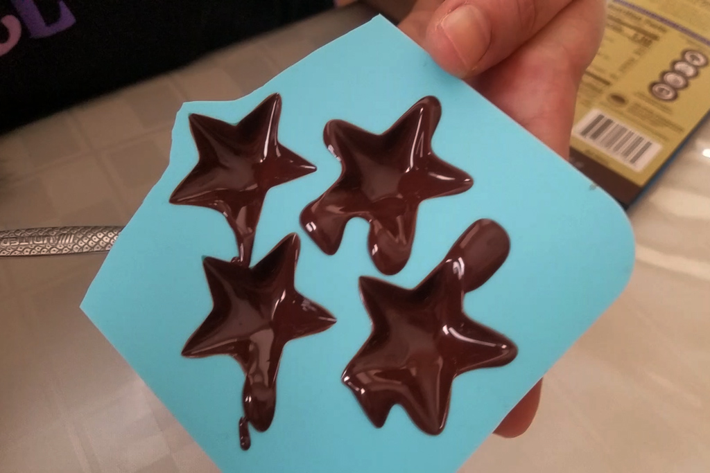
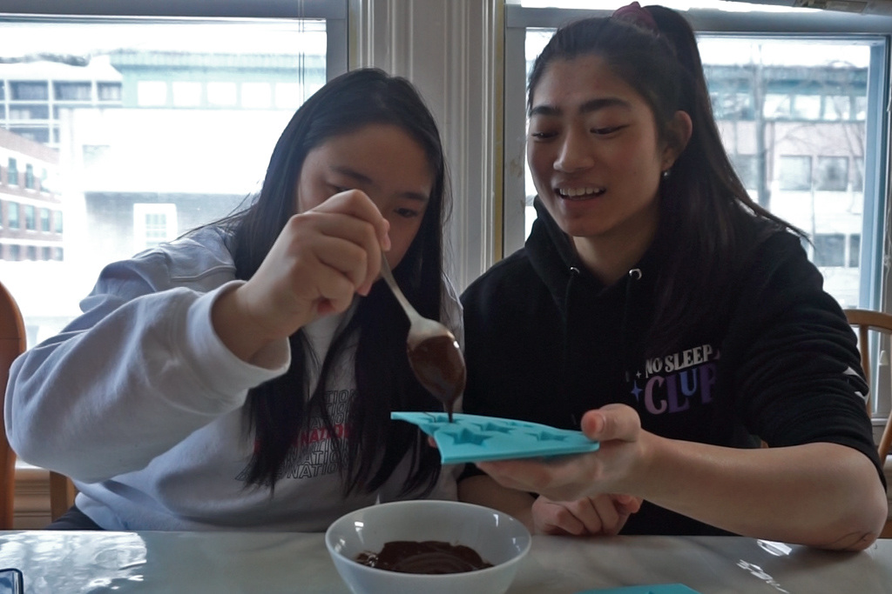
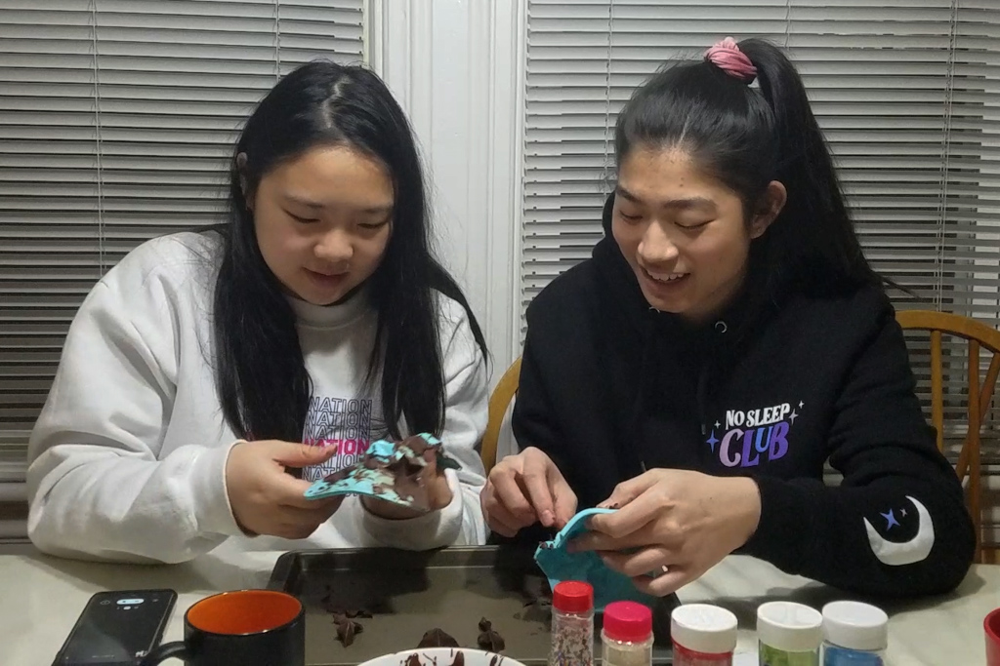
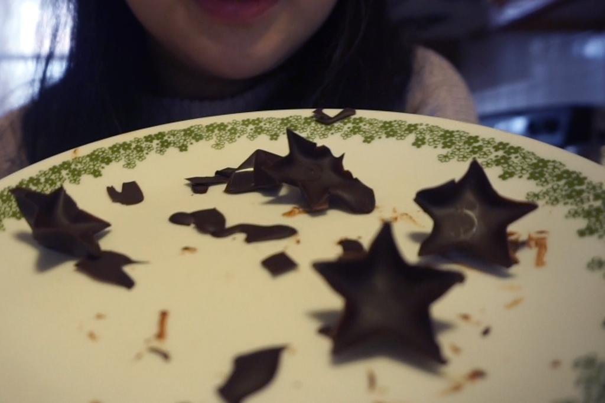
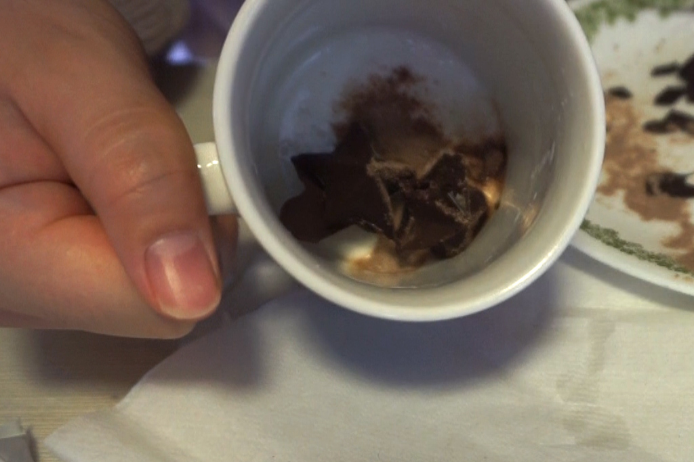

7 Days of Christmas - Hot Chocolate Bombs
Dec 21 - Written by Bonnie and Emily
It's Day 3 of our Seven Days of Christmas series and this time we took a quick break from DIY crafts to bring you a classic holiday drink but with a twist!
From Tiktok to Vlogs, we’ve seen these hot chocolate bombs floating around the internet and knew we had to give it a try. But of course with us, there's always a twist.
Since neither one of us is familiar with these on Tiktok and had only seen it in another youtuber’s video, our entire creation process was developed on the fly with our own guesses as to how this is supposed to work. Since we always go rogue, we definitely had a few failed attempts but that didn’t stop us from making it work. As always, we tend to get very ambitious with these types of things so we opted for something a little cuter than the typical sphere mold and got some star shaped molds instead!
As you may now know from our first two videos in our Christmas series, we never finish making anything without at least some decorations! We went ahead and also picked up some festive sprinkles to add a pop of color to our cute star shaped chocolate bombs. This step is optional but highly recommended as it's always so pretty to see how the sprinkles melt into the milk and the colors fade away.
Little did we know that a change in molds would drastically affect the process. Since our molds were a little small, we tried to get our chocolate shells as thin as possible by emptying out a lot of the excess chocolate. However, doing so resulted in fragile stars causing them to crack from any attempt at removing the molds. Although we failed at making these bombs, we still got a delicious snack out of it. Don’t let your failed chocolate bombs go to waste and eat them or turn them into hot chocolate and try again!
We couldn’t just let that pass and of course tried to make these bombs again, as they say, every failure is a lesson learned. Going off of what we had learned from that first attempt, we made the new ones a little thicker in hopes that they’ll release easily from the molds with mild breakage. That wasn’t entirely true but this second attempt did go a bit smoother, at least for Bonnie.
With slightly more intact chocolate stars, we managed to piece together what we had and created some little star shaped hot chocolate bombs. We may have forgotten to decorate them with sprinkles and they may be a bit messy, but I’d say we managed to turn a complete fail into a bit of a success. No matter how they looked, they still made very yummy cups of hot chocolate so don’t be discouraged if yours don’t turn out the way you intended it to.


If you choose to make your own hot chocolate bombs, definitely look for a larger mold so that you can layer on an appropriate amount of chocolate and fill it with plenty of hot chocolate mix and marshmallows! You cannot forget the marshmallows.